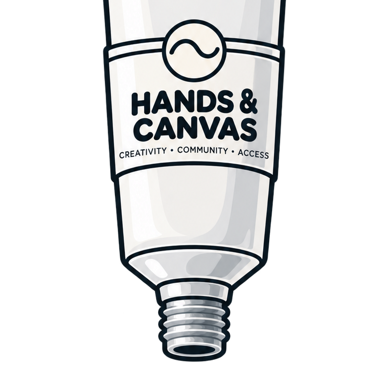

Art City partnership
A partnership milestone that helped create an early foundation for community-based arts programming.
From the first Art City partnership to workshops, showcases, summer programming, and what comes next.

A partnership milestone that helped create an early foundation for community-based arts programming.
An early trip that moved Hands & Canvas from planning into hands-on community art experience.
A one-hour workshop serving roughly 30–45 students and expanding Hands & Canvas into another youth setting.
 April 23
April 23A one-hour workshop serving roughly 30–45 students and beginning a new chapter of BGC programming.
June 19A showcase milestone highlighting creative work developed through pottery programming.
A week of one-hour workshop sessions, with attendance typically around 30–45 students per workshop.
A second week of one-hour workshop sessions, continuing the summer program and bringing more young artists to the table.
Beyond the Studio is in development, expanding Hands & Canvas beyond in-person workshops through shareable art, create-with-me activities, and Studio Kits.